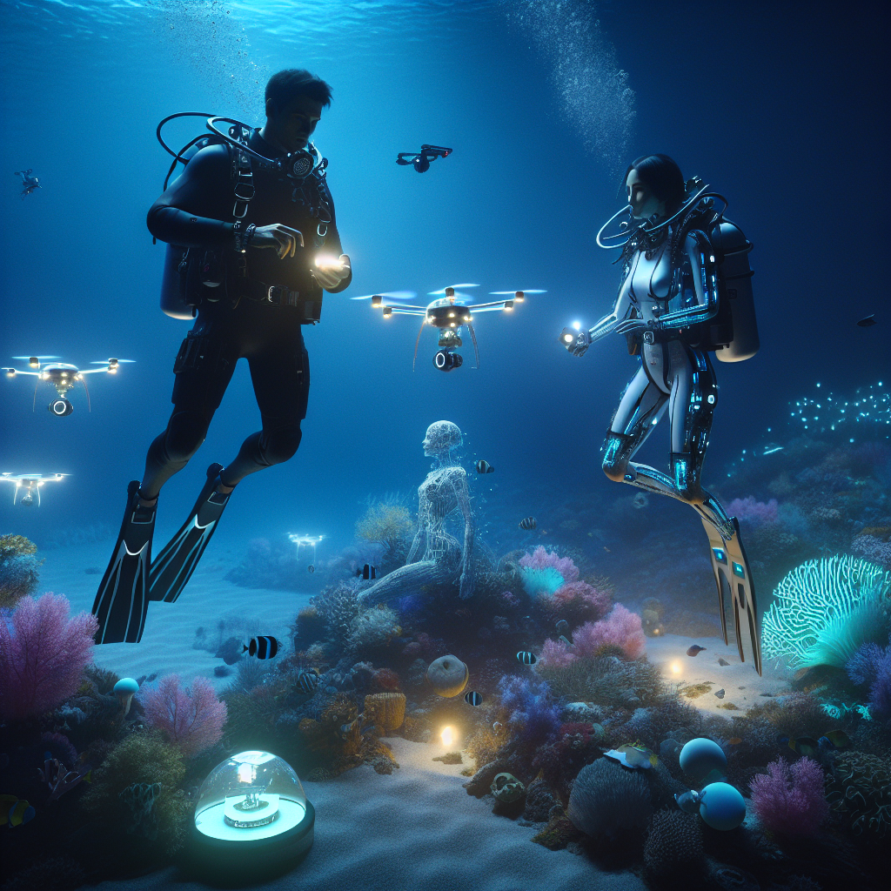

**The Future of Scuba Diving and AI**
As a scuba instructor, I’m always fascinated by how technology reshapes our underwater experiences. The integration of Artificial Intelligence (AI) into scuba diving is a game-changer, offering new ways to enhance safety, training, and exploration.
### AI in Equipment
One of the most exciting developments is AI-enhanced dive equipment. Smart dive computers can now analyze dive profiles in real-time, offering personalized safety recommendations based on individual diving habits. These devices are becoming invaluable for reducing risks, especially for beginners.
### Training and Education
AI can revolutionize scuba training, making it more accessible and personalized. Virtual reality (VR) simulations powered by AI can offer realistic diving experiences, helping new divers learn skills and overcome fears in a controlled environment before hitting the ocean.
### Environmental Monitoring
AI is also playing a crucial role in marine conservation. Automated drones and underwater robots equipped with AI can monitor reef health, track marine life, and collect data on water conditions, providing scientists with invaluable insights without disturbing the aquatic environment.
### Enhanced Communication
For divers, communication underwater has always been limited. AI is helping to develop advanced communication devices that can translate hand signals and even spoken words, making group dives safer and more coordinated.
### The Road Ahead
While AI brings exciting advancements, it’s important to balance technology with traditional diving skills. The human element—the thrill of exploration and the connection with marine life—remains irreplaceable. As AI continues to evolve, it will undoubtedly offer divers an enriched, safer experience while opening new frontiers in underwater exploration.
Join me as we dive into this promising future, where technology and the natural world intersect to create unforgettable underwater adventures.